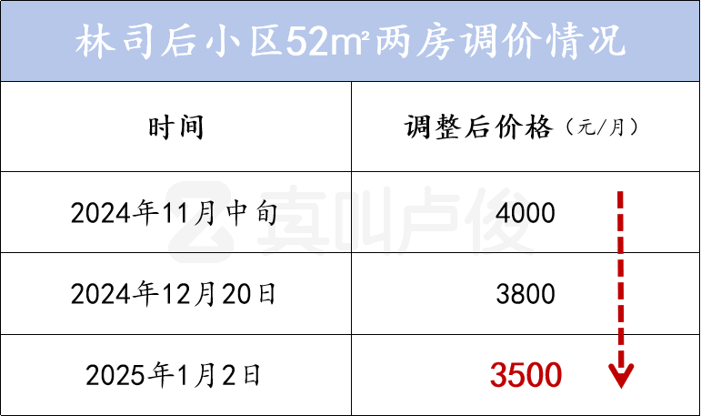
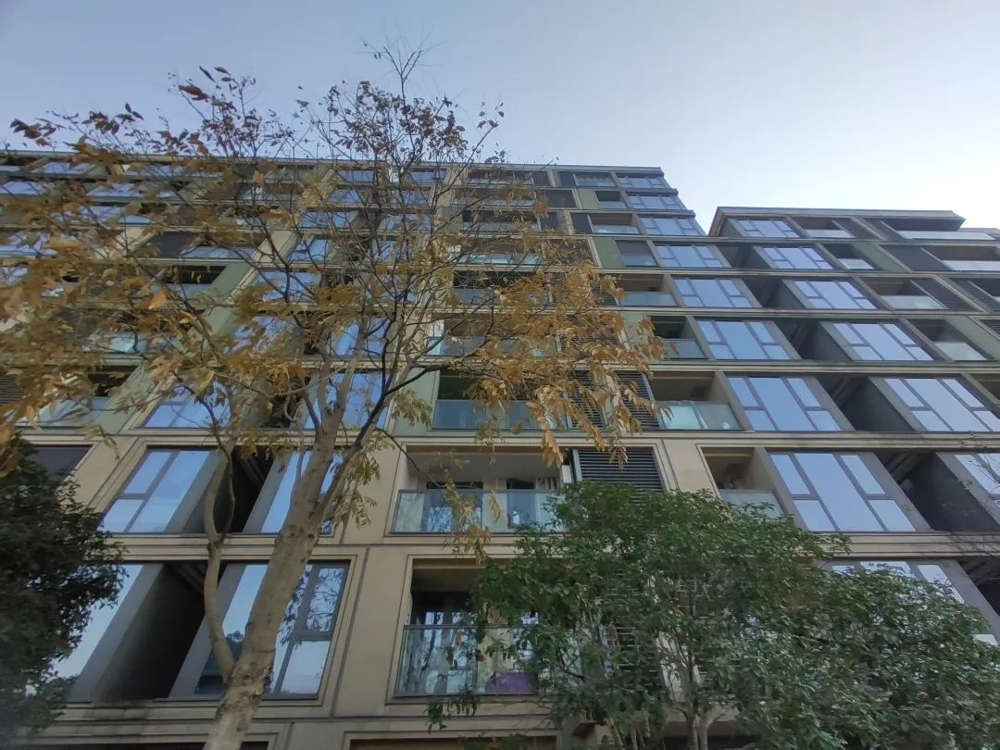
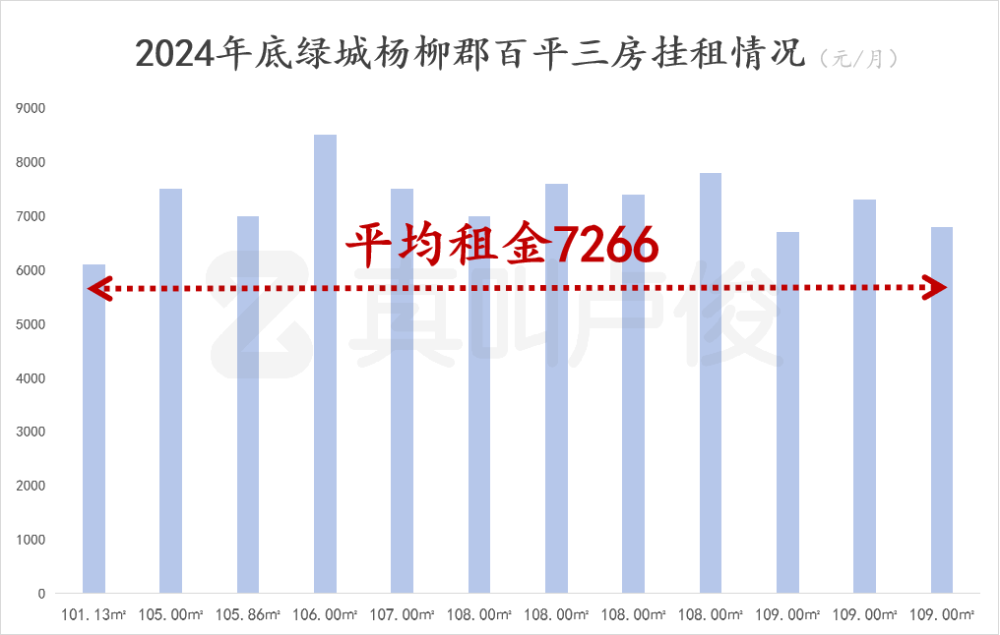
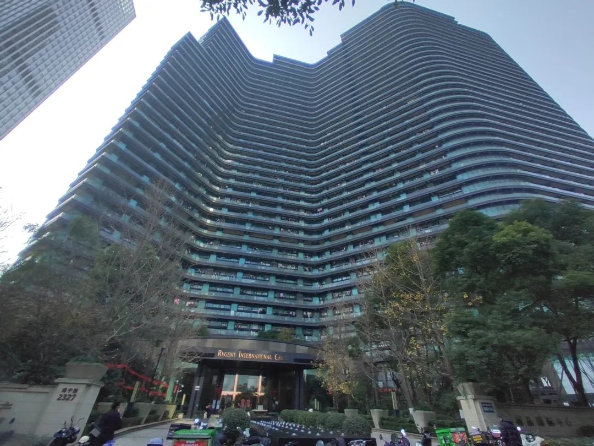
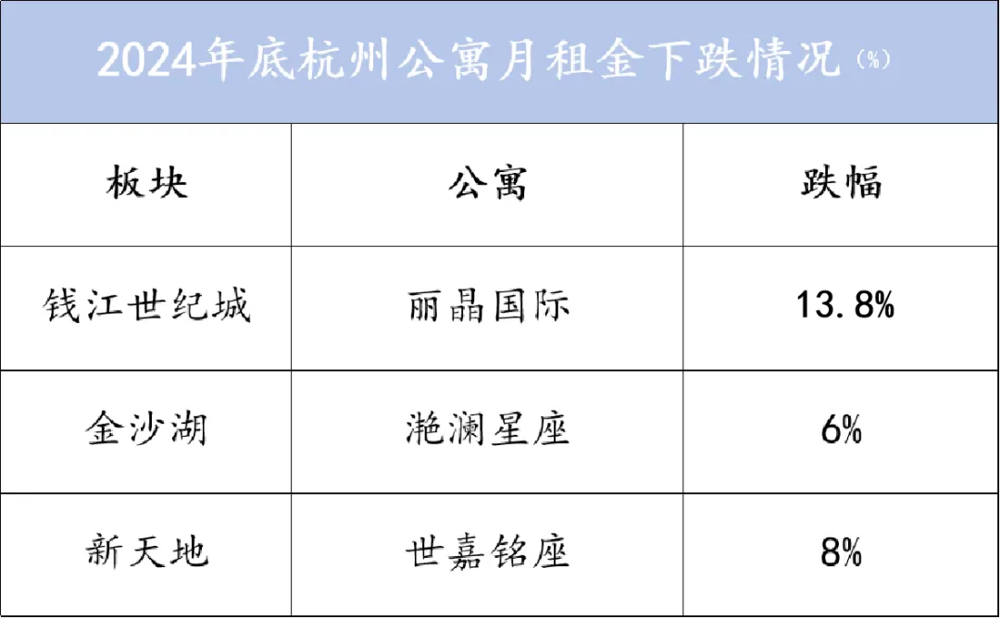
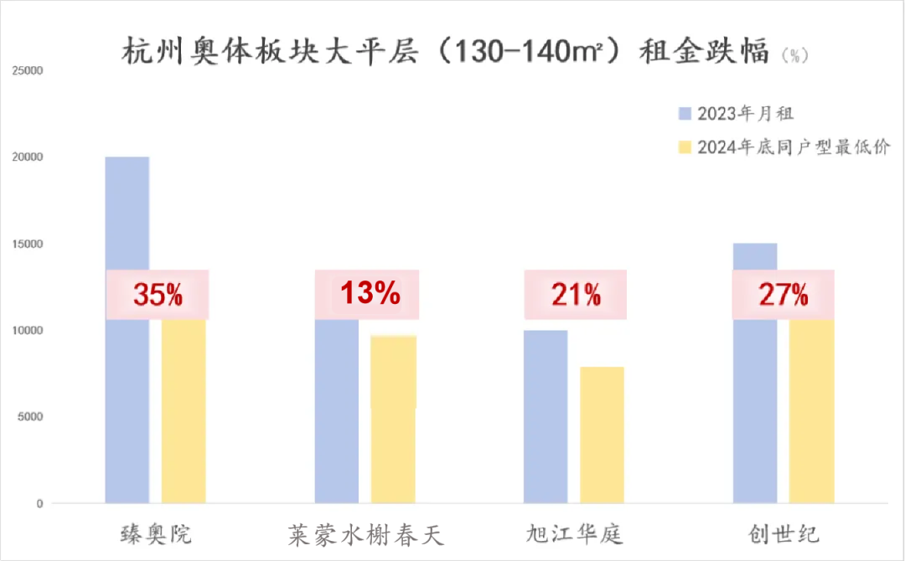

确实，2024年全国租金都在降
宏观体感上一线微跌，二线全跌
而且市场已经没有所谓淡季旺季了，我联系的几个中介去年最大感受就是，连毕业季都没往年热闹了
比如我们base的上海去年就有强烈体感
一位徐泾的同事2023年月租金4400元，到2024年底尝试和房东商量降租，还没发力房东就先自砍一刀降了200元
包括刚刚过去的12月，我计划从宝山换租到浦东中环跟着中介看了十几套，平均每套基本能砍掉300元
但最让我意外的还是杭州
各位也看到了杭州的数字，2024年底租金累计跌幅在5.38%

这个数字全国第二，新一线城市中排名第一
杭州这座城市我们之前踩盘过很多次了，给我的印象除了亚运会，就属它抢人最积极、也是最成功的
这几年眼看着越来越多的年轻人扎堆杭州，把这里当成梦开始的地方
作为新一线的领头城市之一，想不到如今租金下跌竟然如此疯狂
杭州到底怎么了？
或者说，杭州的租赁市场到底怎么了？
所以这次我连夜定了虹桥到杭州东的高铁票

实地去看了杭州市区、城东、奥体等热门板块的7个典型小区后
很意外发现，它们的租赁情况竟然是这样的
01
尤其这几类房子，降到了我没想到的程度
比如之前最贵现在也放下身段的市中心老破小
前些年杭州市区老破小因为地段好，租金一直居高不下
比如凤起路上的十五家园

就挨着沪上阿姨们最爱的环北丝绸城，黄金地段，绝对中心
但据中介说，去年这边普降10-15%
2023年末十五家园一套50㎡2房，租金至少4000元/月
但如今，我去看了一套面积差不太多的45㎡2房
而且是精装修，租金3500元/月

面积差只有5平，但我轻轻一算，同比跌去了12.5%
包括马路对面林司后小区的一套52㎡两房
中介告诉我这套房子在他们平台已经调过3次价格了，前两天刚降到标红的位置

而且这里的房东非常爽快，直接砍三百都能迅速接受，问什么时候住进来
只能说越到年底房东的焦虑越直观啊
看完老破小，当然也得看次新房
而说到这个就不得不提城东的次新扛把子，绿城杨柳郡了

中介告诉我这里的市场一直挺好的，往年一年可以租出去300多套，百平三房每月可以租到8000元以上
2024年当然也降下来了，但大部分房东心态反而挺稳的
我统计了下链家2024年底该户型全部挂租房源的价格
目前平均月租确实还保持在7200元/月以上，跌了9.2%

其中一套价格最低的，是低楼层的109平三房，租金6800元/月
我问每月6500元能租吗
中介有些为难说房东可能不会一下子给这么大空间，因为前两年都是月租7500-8000元的
和前面老破小的房东一对比，这里的次新房东确实要更自信一些
还有一类房源也在下跌
就是往年投资人士喜欢的公寓、大平层之类
但两者还是有区别
我先去看的是公寓，站在丽晶国际中心楼下

脑海中还是之前2万名网红主播挤在隔断间的场景
但走进去才发现，从2018年“限酒令（严禁小面积酒店式公寓）”严控之后，这里的租赁市场还算比较健康的
前两年的一室一厅是2900元/月，如今房东挂出来的价格在2500元/月，跌幅13.8%
中介非常热情，现场又替我砍了380元
而几个热门板块的公寓小区，跌幅也有高有低

来源：市调及网络公开数据，仅供参考
不过和整个市场基调相比，程度都不算太夸张
至于一些新晋大平层就是另一种情况了
尤其最受欢迎的奥体、钱江世纪城等网红板块，租金本身就抬得比较高
比如奥体，就一直是杭州租金第一梯队

但2024年下滑空间也大一些
尤其头部天花板级别的臻奥院
中介透露前年底的租金在2万/月，2024年尾也来到了1.3万/月的下限
包括创世纪和旭江华庭这些豪宅小区，都面临同样的情况
尤其我去看的旭江华庭一套大户型，上一任租客12月初搬走的
目前已空置一个多月，接下来就是农历新年，还将面临大概2个月的空窗期
所以房东也很nice，在这个基础上可以再砍300还包物业费
而且除了绿城杨柳郡的中介，其他板块的中介小哥们对砍价都比较有信心
毕竟谁也不想空着1月、2月大几千的租金不要，就为了跟租客还那几百块钱
可见对大部分杭州本地房东来说，2024年估计是最难留住租客的一年
02
不只这些小区的房东，其实整个租赁市场的数据都不太乐观
我整理了下近几年杭州的租金数据
发现这座城市的租赁市场不是从今天才开始异样的
而是近四年都不太乐观

2021年杭州月平均租金还在52.81元/平
但到2023年，平均月租金已经走到了50元的临界点上
去年目前只有前11个月的平均数据，看起来和23年基本持平
但再加上低谷的年尾，这个数字能不能稳住其实不好说
而去年11月份，杭州月租金已经来到了近四年最低

除了去年7月份的毕业季环比微弱上涨，但幅度小到几乎可以忽略不计
整体看就是滑滑梯一样，从年头一路下滑到年末
照这个走势，全年平均数能否维持住2023年的50元基准线还是不太乐观的
这种大环境下，去年杭州几乎没有一个板块能逃过降租的命运
贝壳研究院数据显示，杭州十区118个板块中有90个板块房租下跌，占比超过7成
于是我又选取了其中八个区域的24个代表板块，并一对一线上市调了当地中介，得到了一个均值
也就是全市平均下跌13.7%的样子
具体情况就是这样

数据来源：2025年1月1日市调，仅供参考
可以看到，每个区域都有那么一两个板块房租下降蛮厉害的
比如滨江的奥体、余杭的未来科技城，以及西溪和临平新城板块，都超过了20%
尤其奥体一带、和未来科技城
以我市调的90平三房这个标的来看，这两个板块年末月租金比去年同期都降了1200元
但也有区域降幅并不算大，基本在5%-10%之间
比如位置偏远的临平东湖和萧山市区
本身板块租金水平就没那么高，水分比较少
2024年挤出空间也只有200-300元左右
但据各板块的中介感知，总的来说这一年杭州房租同比降了300-1000元不等
电话中他们语气有些无奈，用词都是“降得非常多”、“这个价格以前不可能租到的”
但根据我实地踩盘的结果来看，如果愿意讨价还价，那这些挂出来的租金都不是最低
实际上房东的心理底价可以再减200元，甚至更多
当然也有一部分房东着急出租，2024年底前直接挂出了底价
但似乎也是一种试探
截图来自：杭州链家
如果问的人多了但过年前还是租不掉，价格也只能进一步下调了
03
所以，为什么偏偏是杭州？
这几年我们平台关注杭州也算比较多的了
不难发现，实际上这么大范围的全面降租，对杭州来说早就有迹可循
首先一个最直接的原因就是产业结构不够多元
过去十余年杭州因电商而起
每个新一线都希望有自己的阿里巴巴，但显然不是所有城市都叫杭州
从电商之都到网红之都，这条长板足够长，长到可以带动一个城市飞速向前
但背后，其他短板就显得有些无力了
所以当直播电商行业从狂奔走到紧缩

也就没那么多慕名而来的网红主播和年轻人继续留在杭州了
尤其一些头部大主播已经举家撤走
比如前年向太在世茂智慧之门租下了一整层，斥资百万装修
然而才过了一年多已经人去楼空
不得不说网红大批撤出杭州之前，确实帮家人们把房租的价格打下来了
而同样退场的还有投资客们
尤其那些这几年买了新房的房东，伴随房价下跌，看情况已经不打算卖房了
于是整个市场上有巨量次新房转售为租
比如前文提到的杨柳郡，所在的艮北新城就是一个大型居住区
作为艮北超级大盘，光是绿城杨柳郡就有将近5000户家庭
而这个区域内的九和路、新塘路上，这些灰色方块大部分都是次新或待交付小区

我粗略数了数，加起来就不止15个
可想而知是什么样的房源体量
包括勾庄、奥体附近的亚运村等板块，近几年交付的新房也聚在了一起
这些次新集中交付的板块或周边，来到2024年就形成了严重踩踏
租金直线下滑也是意料之中
而且，杭州的新房还在源源不断供应

很明显，到2023年杭州新房交付来到了一个高峰期
除了那些本来就不打算卖的房东，还有此前触发5年限售的热门新房，到了2024年依然在限售范围
也只能纷纷流入租赁市场
于是这一年杭州房东的日子就更加不好过了
但是这还没算上保租房的体量
之前天量保租房那篇文章中，我就替大家统计过杭州的数据
2024年6月底杭州实际筹集保租房6.01万套（间），而新增供应是1.3万套
不仅交付量大，租金也并不算太高
比如亚运村的宁巢美地公寓，40平一室户月租金2350元，60平也只要3500元
和市场价相比，相当于打六折
大量交付加上和6、7折的租金，对2024年租赁市场形成冲击也是不容忽视的
04
其实这次实地踩盘+线上市调完，心情一度很唏嘘
如今的杭州确实面临一些挑战，从租金下滑反映出的一系列问题也真实存在
不过除了产业单一、供应过量，杭州的租赁市场也是多方导致的结果
一个最基本的因素就是这两年楼市本身就在调整期
很多受影响较大的二线城市，也开始适应行业下一阶段
杭州当然也不例外
但通过这两年实地踩盘，我们能感受到杭州这座城市的底色依然是年轻化
比如为了抢人直接发钱、提供应届生免费住宿的“春雨计划”等等...
包括最近智联招聘的一份数据，也体现了杭州在年轻人心里的真实地位

95后最喜欢的城市中，杭州是全国仅次于北上广深的第一城
这一点是当之无愧的，也是杭州这么多年主动寻求年轻化的结果
相信这段行业调整期过后，杭州这座城市的未来依然会更好
本文作者：真叫卢俊团队，来源：真叫卢俊 (ID:gh_30ed65343713)，华尔街见闻专栏作者，原文标题：《我去了趟杭州，没想到租金下滑的这么厉害》